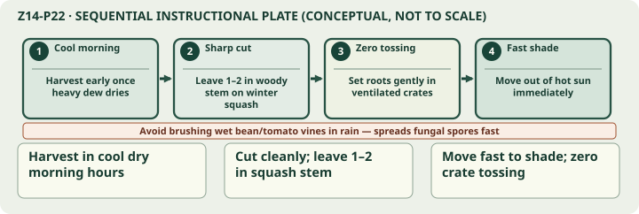

Z14-P22 · Food production and preservation · New manuscript
Harvest garden crops at proper maturity in cool morning hours
Maximize crispness, nutrient density, and post-harvest storage lifespan by picking cleanly before midday heat stress.
When it applies · Harvesting greens, roots, beans, tomatoes, onions, and winter squash for fresh use, preservation, or cellar storage.
Equipment · Sharp clean harvest knife or shears, ventilated clean food-grade crates, shade cover, and cool wash station.

Actions
- Harvest most vegetables in cool early morning hours after heavy dew dries—plants hold peak turgor and lowest field heat in the morning, slashing post-harvest wilting and spoilage rates sharply.[P04]
- Cut stems cleanly with sharp sanitized shears or knives (leaving a 1-to-2-inch woody stem intact on winter squash and pumpkins so rot cannot enter the top scar) and handle roots and tubers gently without dropping or tossing them into crates.[P04]
- Move harvested produce out of direct hot sun immediately into shade or cool storage so rapid respiration does not drain sugars and shorten storage life.[P04, P16]
Failure recognition · Ripping stems straight out of winter squash tops and dumping potatoes hard into bins in 88°F midday sun, causing rapid storage rot.[P04]
Verify · Confirm morning harvest timing, intact squash stems, gentle zero-bruise handling, and immediate shade cooling.[P04]
Stop or change course · Do NOT harvest wet bean or tomato foliage while rain/dew drips heavily—brushing wet leaves spreads fungal spores across the entire row.[P03, P04]
Evidence and editorial notes
- P03 · University of Minnesota Extension · Planting the Vegetable Garden (current web edition)
- Section: Watering, Mulching, Crop Rotation, and Integrated Pest Management · Conditions: Home vegetable plots across seasonal dry/wet swings
Support: Water deeply at the soil base rather than overhead foliage to conserve moisture and curb fungal disease, mulch soil to stabilize temperature and weeds, rotate plant families across seasons, and identify pests before choosing least-toxic controls.
Limitations: Untreated rainwater or suspect surface water should not be splashed onto ready-to-eat leafy crops immediately before harvest. · Conflicting evidence: None; aligns with FSG-4 clean produce handling.
Editorial note: Grounds resilient low-input gardening and biological pest management. · Specialist reviewer: Extension horticulture and integrated pest management
Primary source · checked 2026-11-24 - P04 · University of Minnesota Extension · Harvesting and Storing Home Garden Vegetables (current web edition)
- Section: Harvesting Maturity, Curing, and Post-Harvest Handling · Conditions: Home garden root crops, winter squash, onions, potatoes, and greens
Support: Harvest crops at proper maturity during cool morning hours without bruising, cure storage crops (onions, garlic, winter squash, potatoes) at crop-specific warm/dry conditions before cold storage, and cull any nicked or diseased items for immediate use.
Limitations: A single bruised or rotting vegetable spreads decay rapidly across an entire storage bin. · Conflicting evidence: None; explains why curing precedes long cold storage.
Editorial note: Anchors harvest-to-storage quality gates in Z14. · Specialist reviewer: Post-harvest horticulture specialist
Primary source · checked 2026-11-24 - P16 · USDA / FDA / CDC · Four Steps to Food Safety (current web edition)
- Section: Clean, Separate, Cook, Chill > Produce Washing and Cross-Contamination · Conditions: Garden-to-kitchen harvesting, food prep, and preservation workspaces
Support: Wash hands 20 seconds with soap and safe water, scrub firm produce under running safe water before peeling/cutting, keep raw animal foods strictly separate from ready-to-eat produce, and sanitize prep surfaces and utensils between tasks.
Limitations: Washing produce with soap, detergent, or bleach is unsafe and not recommended. · Conflicting evidence: None; extends F01–F03 into garden harvest and home preservation.
Editorial note: Anchors kitchen sanitation and cross-contamination barriers in Z14. · Specialist reviewer: Food safety and public health
Primary source · checked 2026-11-24
Current assessment · A04-P16 (2026-11-25) · Bounded support newly confirmed (A04): Verified handling sequence for food preparation using safe water. No advice here for a water emergency or decontaminating a specific product. Limits: Specialist review PENDING (Food safety and public health); publication HOLD. All release decisions pending.
Source lineage · UMN Extension Harvesting and Storing Vegetables; new manuscript · Classification · New manuscript.